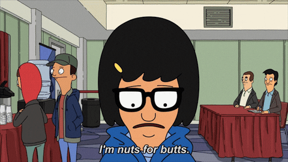

To wish our beloved Danny Summerlin a Happy Birthday, we’ve compiled a list of all the
“butts” mentioned in
Bob’s Burgers

“The hand wants what the hand wants.
I can’t tell where your back ends and your butt begins.”
-Tina Belcher
The Methodology
Katie ran a python script that went through the subtitles and found every instance of “butts” that is
mentioned
in Bob’s Burgers.
It is with a group effort that we have timestamped every instance and who said it.
With that as our baseline, Carolyn has created the following Power BI report to show: